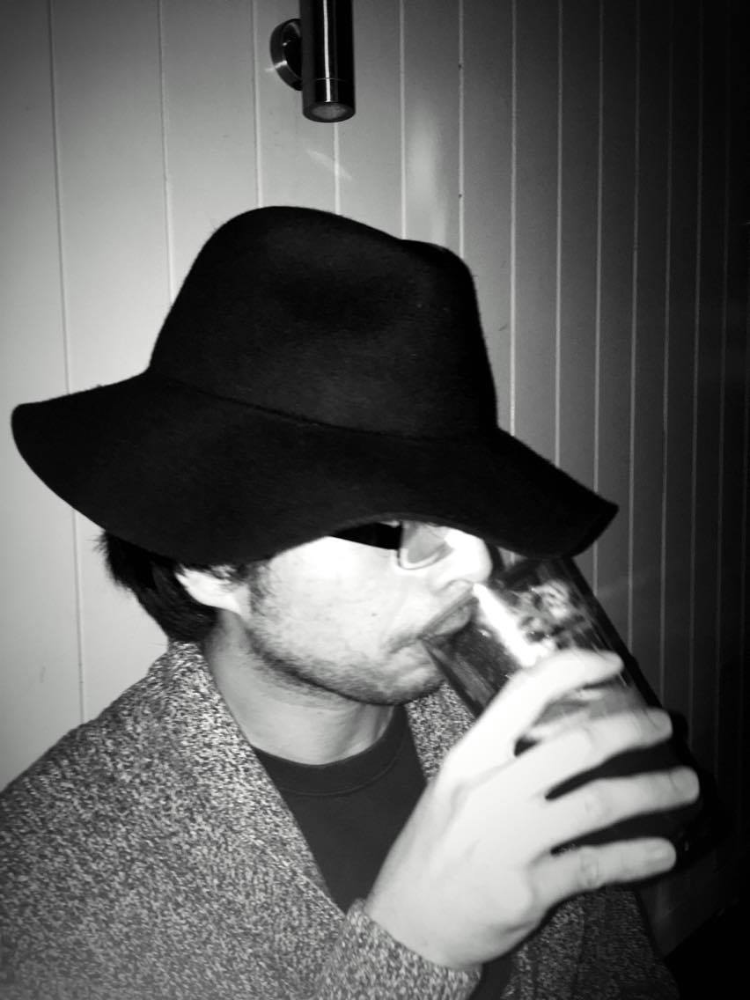

Introduction
Välkommen! It seems that you have found my "secret" website. Here you find my personal blog, where I write stuff related to my projects and hobbies, and my latest contact information. You are welcome to share the content you find on this website.
About me
I am a self-taught computer enthusiast, and is currenly pursuing a degree in Master of Science in Engineering at KTH Royal Institute of Technology.
I find the world facinating, that is why, as a kid, I try to find information on how the world works. At the age of twelve I already knew how to program in ASP, which is a programming language focussing on websites. Today, I am a master in Linux and Python, and are using my programming skills to create programs that makes everyone's life easier. See my github.
Also, I like to watch movies, listen to music, run, read magazines and books. I like comics. I play Hearthstone and Terraria from time to time, I am also a sucker for retro games like Super Mario and A Link to the Past.
Contact information
The easiest method to contact me is E-mail. I rarely use phones. My E-mail is me@olofsjodin.se, use my PGP public key.